什么是跨域？说直白点就是获取别人网站上的内容。但这么说貌似又有点混淆，因为通常我们用ajax+php就可以获取别人网站的内容，来看下面这个例子。
来看看跨域的例子，jquery+ajax是不能跨域请求的，因为受到浏览器的同源策略的限制，会报错。
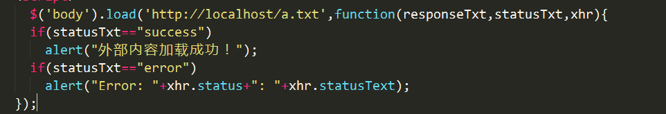
错误：
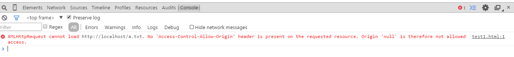
但是script标签的src是具有跨域能力的，还有img的src属性一样，都能够获取从别人网站的内容。在没说道JSONP之前，我们可以用静态的script标签加上src去获取：
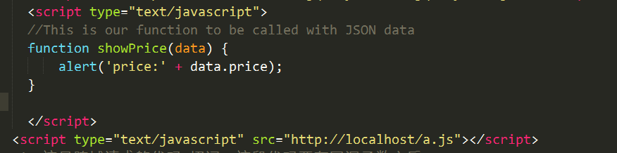
这里的a.js
结果：
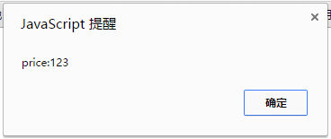
在这里说明，a.js是在本地服务器里的，而测试文件并不在本地服务器中，也就是说他们的域是不同的。这段代码也相当于把跨域了的js文件加载到测试中间中了，相当于调用了这个函数。
而JSONP的原理也是类似的，只不过采用的是动态创建script标签：
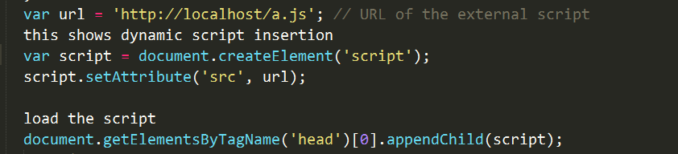
将静态的替换为了动态的而已。这就是jsonp的原理了吧，我是这么认为的。原生的使用起来总是这么麻烦。
那么将其结合jquery来使用会是怎样？
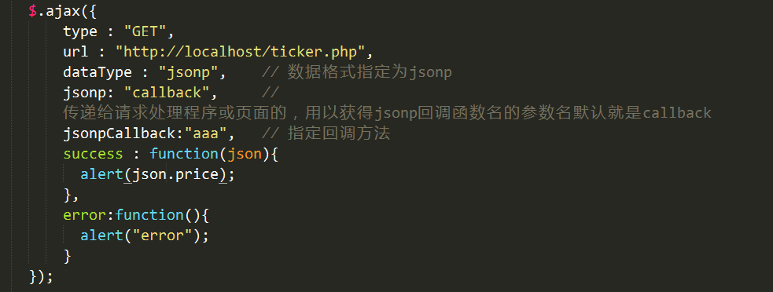
这里的jsonpCallback是用来指定回调方法，这里我为什么填了一个aaa呢？因为是我随便填的，在这里并没有多大意义，因为我并没有定义aaa函数，所以，当我没有定义aaa函数的时候，jquery会自动匹配函数success:function(json){ }。但如果我定义了aaa呢？如图：
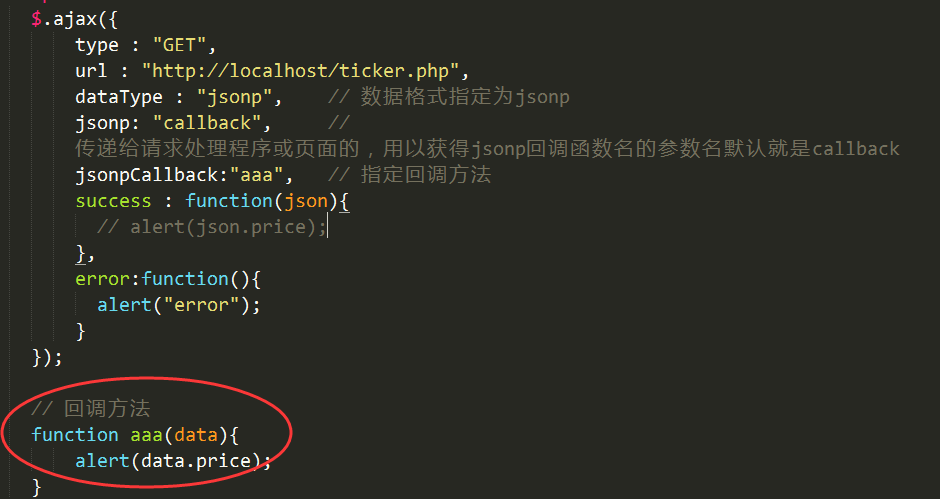
显示的结果没变，还是
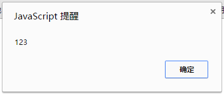
因为涉及跨域的问题还有一个jquery方法可以实现，那就是$.getJSON，只不过不能指定回调函数，在这里就不演示了，用法都是一样的，来张图：
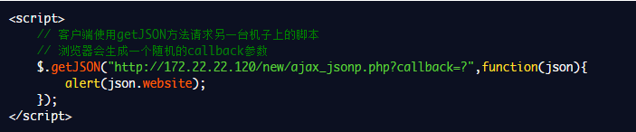
有的同学能会遇到这样的问题，就是返回的状态码已经是200了，并且也能看到返回的数据，但浏览器会报错，并且$.ajax执行的回调函数是error，并不是success
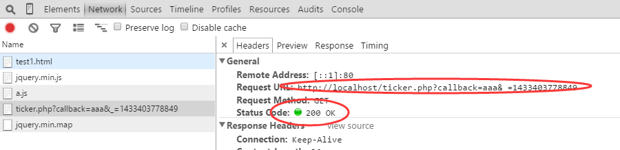
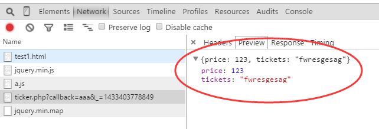
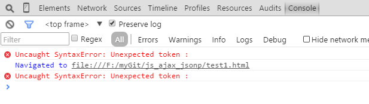
那是因为没有理解JSONP的运行原理，它的原理是把远程的数据当作javascript来运行的，到这里就很有必要说一下远程的php代码了，报错的同学的php代码可能是这样的，返回json格式数据
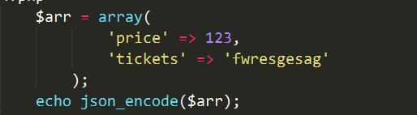
但你发现没有，在ajax请求的时候，我们发送给服务器一个回调函数的名字，默认都是callback，就是这句： jsonp: "callback",有的同学刚开始肯定没理解，再看看正确的php代码：
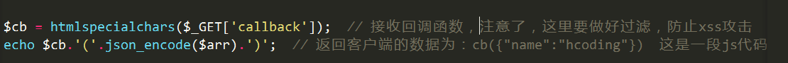
我们默认就将callback函数发送过去了，并返回了形如 函数名(json数据)，这也就是我们前端说的JSONP的原理所在，是以js代码运行的，就相当于把这个函数加载到文件中调用了这个回调函数，对吧？慢慢理解。
再来说说区别，ajax和jsonp，有人说（我之前也这么认为），ajax可以通过请求本地的php，用php去抓取别人网站的数据，再显示，那算不算跨域呢？我觉得算是，对此我也不很清楚，若有大侠见此，能否为我指点迷经。但是jsonp是直接请求跨域的php文件而不是本地，但说到底，ajax和jsonp其实本质上是不同的东西。ajax的核心是通过XmlHttpRequest获取非本页内容，而jsonp的核心则是动态添加script标签来调用服务器提供的js脚本。
或许，也可以这样说，ajax与jsonp的区别不在于是否跨域，ajax通过服务端代理一样可以实现跨域，jsonp本身也不排斥同域的数据的获取。
我似乎还是没有理解透彻，希望大侠到此指点指点。致敬。
参考：
jsonp跨域请求学习笔记
【原创】说说JSON和JSONP，也许你会豁然开朗，含jQuery用例
使用 JSONP 实现跨域通信，第 1 部分: 结合 JSONP 和 jQuery 快速构建强大的 mashup
jsonp详解—javasript/jQuery跨域请求
jQuery - AJAX load() 方法